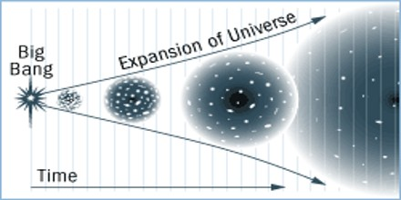
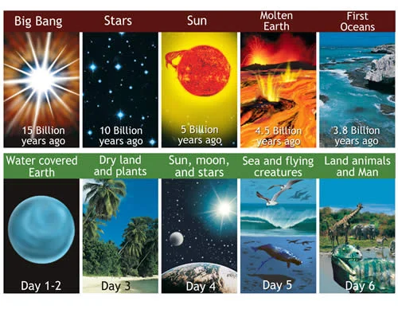
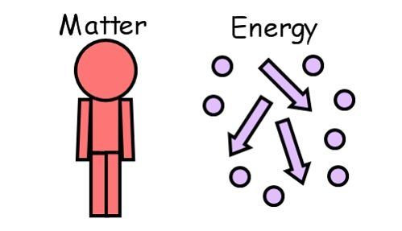
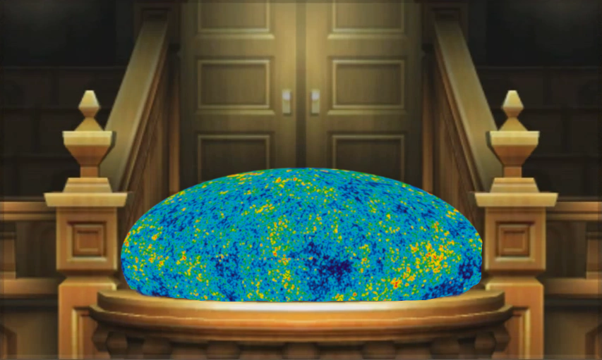

Apologetics Review
What is it?
-
Definition: Giving a reason for your beliefs or faith
(Why I believe what I believe) -
Comes from the Greek term apologia
1 Pet 3:15 (Make a defence)
Apologetics Review
Why?
- To increase our faith and confidence in Jesus. Our faith is not blind. Our faith is logical and rational.
- To defend our faith when we are asked why we believe what we believe in
- But don’t forget that apologetics is not about...
- Not about winning
- Not arguing someone into faith.
- Not the only reason why we believe in Jesus.
Creation Part 2
Origin of Everything
(brace yourselves for a bunch of physics)
Status Quo
the current situation; the way things are now
Before the 1900's, it was believed that the universe was always "just there"
(The eternal universe theory)
But it was easily countered with arguments like:
- An infinite past cannot reach the future
- Conflicts with thermodynamics (study of energy interaction)
- The 2nd Law of Thermodynamics - the energy between two systems will equalize when they interact with each other
2nd Law of Thermodynamics

But it was easily countered with arguments like:
- An infinite past cannot reach the future
- Conflicts with thermodynamics (study of energy interaction)
- The 2nd Law of Thermodynamics - the energy between two systems will equalize when they interact with each other
- If there was an infinte past, the universe would've used up all the usable energy by now
"So then, what started the universe?"
The atheist answer?
The Big Bang Theory
The Main Question
Did BigBang happen?
Yes

The (Real) Main Question
Did the "Big Bang" happen?
What Led to the Big Bang Theory?
- An expanding universe (doppler effect)
- Cosmic microwave background radiation
- An expanding universe (doppler effect)
Change in frequency of a wave in relation to an observer
- An expanding universe (doppler effect)
- An expanding universe (doppler effect)
Redshift = Galaxy moving away
- Cosmic microwave background radiation (CMB)
Radiation evenly spread in all directions
What is the Big Bang Theory?
- ~13.8 billion years ago, there was a singularity
- This singularity was infinitely dense and hot
- The singularity expands rapidly causing a "big bang"
- Particles form, then stars, galaxies, etc.
- The universe begins to cool down
- The theory predicts the end is through "heat death"
Conflicts with the Bible
According to the theory...
- God didn't create the universe, it started itself
- The universe wasn't made in six days, but billions of years
- The universe wasn't designed, but happened by chance
- The future doesn't end with God, but hopelessly through "heat death"
Aside: Don't Compromise!
- Some Christians believe that Genesis wasn't literal
- "The universe wasn't created in six 24-hour days"
- Each "day" was actually billions of years (???)
Aside: Don't Compromise!
- God is not figurative when He says six days
- If we change the meaning of what the Bible means, we are creating our own bible
"For in six days the Lord made the heavens and the earth, the sea, and all that is in them, but he rested on the seventh day"
Exodus 20:11
Problems with the Big Bang Theory
- Origin of the laws of science
- Origin of energy and matter
- Theory inconsistencies with the CMB
1. Origin of the Laws of Science
- Heart of science is man's discovery of the laws of nature
- These laws do exist
- But there's no evidence that these laws can "write" themselves to existence
- To believe that they can "write" themselves would require blind "faith"
2. Origin of Energy and Matter
- All the energy and matter would also have to create itself
- The Big Bang Theory says that all the energy and matter started in one place (where did that come from?)
- But certain laws of science contradict this...
1st Law of Thermodynamics - matter/energy cannot be created or destroyed; they can only be converted from one to another to keep the total sum of both constant
1st Law of Thermodynamics - matter/energy cannot be created or destroyed; they can only be converted from one to another to keep the total sum of both constant
Law of Causality - every effect that we see in nature always has a cause
What this means is...
- Matter and energy can't create itself
- Matter and energy can't have always existed
- Matter and energy would have to be caused by something (or someone) outside the natural realm
All these points contradict the Big Bang Theory
3. Big Bang Theory Inconsistencies with the CMB
- The theory assumes the universe is isotropic (should look the same in all directions)
- Which means the CMB should be isotropic (which is true)
- Big Bang proponents realized that it's unlikely because it means uniform temperature, which would suggest...
- A designer (fine-tuning conditions)
-
Energy travelling faster than light
(nothing can go faster than light in space)
- The Inflation Theory was created where it allows energy travelling faster than light in the early stages of the Big Bang
- Zero direct evidence and many secular scientists criticized it harshly
- Large-scale (scanning large parts of the sky) temperature differences were not uniform and contradict the inflation theory
- Some of these large-scale temperature differences in the CMB seem to be aligned with our solar system
- Large-scale (scanning large parts of the sky) temperature differences were not uniform and contradict the inflation theory
- Some of these large-scale temperature differences in the CMB seem to be aligned with our solar system
"But when you look at CMB map, you also see that the structure that is observed, is in fact, in a weird way, correlated with the plane of the earth around the sun. Is this Copernicus coming back to haunt us? That’s crazy. We’re looking at the whole universe. There’s no way there should be a correlation of structure with our motion of the earth around the sun—the plane of the earth around the sun—the ecliptic. That would say we are truly the center of the universe."
- Lawrence Krauss, Big Bang proponent
The Big Bang Theory is actually a weak model to explain the CMB evidence and origin
On top of that, if the alignment is correct, it suggests that Earth
just might be the center of the universe
(lucky or designed?)
Other Problems with the Big Bang Theory
- Lack of evidence of dark energy 🪄
- Fermi Paradox 👽
- The Anthropic Principle 📐
- And more..
Lesson Recap
- The universe has to have a beginning
- The laws of science cannot create itself to existence
- Energy and matter can only be transferred and cannot be the cause of itself "naturally"
- The big bang theory has too many inconsistencies with the CMB
- Other areas where it lacks explanations/evidence